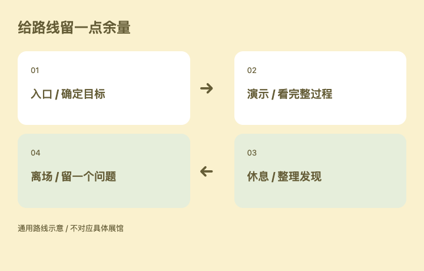

FIELD GUIDE / 轻装出发
第一次逛展，
先找到自己的路线。
出发前先回答
今天最想看懂什么？
留一个主要目标就够了。

示例路线 · 不是某个真实展馆的地图
01先看演示，再听介绍
找一段完整的演示。看它从接到任务到给出结果经历了什么，通常比记住几个口号更有用。
02把问题问得具体
问它在什么情况下做不到，结果需要怎样检查，使用前需要准备什么。带着问题看，才容易留下自己的判断。
随手记录
□ 一个值得记住的演示
□ 一个还没弄懂的问题
□ 一个准备回去尝试的想法
路线留一点余量，给意外的发现。